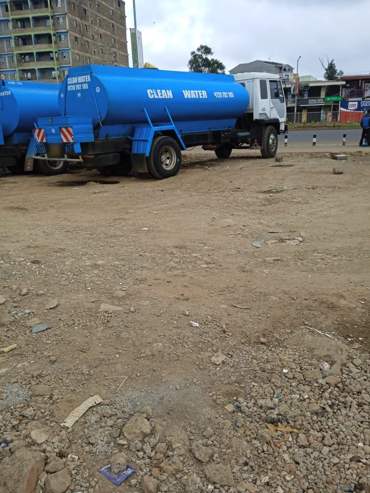

Water Delivery in Kiambu
Water tanker delivery for homes, businesses and construction sites across Kiambu Town and the surrounding area.
Based close by in Githunguri, Clean Water Movers is well placed to serve Kiambu Town and the wider Kiambu area with reliable water tanker delivery for homes, businesses, construction sites and institutions.
We understand local roads and access points across Kiambu, helping us dispatch efficiently when your tank needs filling.
What you get
- Fast Response
- We aim to dispatch quickly so a low tank doesn't run empty.
- Flexible Scheduling
- One-off deliveries or a recurring schedule — either works.
- Wide Coverage
- Homes, apartments, offices, construction sites and institutions.
How it works
- 1
Contact Us
Call or WhatsApp with your location and how much water you need.
- 2
We Confirm Details
We confirm tanker size, timing and any access details.
- 3
We Dispatch
A tanker is dispatched to your location.
- 4
Tank Filled
Water is delivered and your tank is filled.
Areas we serve
We deliver water across Kiambu Town and the surrounding area, as well as Nairobi, Githunguri, Ruiru, Kikuyu, Kiambaa and Limuru.
More from Water Delivery
Common questions.
Cost depends on the tanker size and delivery location. Contact us by call or WhatsApp with your details and we'll confirm pricing before dispatch.
We aim to respond and dispatch as quickly as possible. Response time depends on your location and current jobs — contact us directly for the soonest available slot.
Yes, we deliver to apartment blocks and residential compounds in addition to standalone homes.
Yes, we supply water to construction sites as well as homes, businesses and institutions.
Yes, this is one of the areas we regularly serve. Contact us to confirm details for your exact location.
Yes, you can schedule a one-off delivery or set up a recurring delivery arrangement — just let us know when you contact us.
Call or WhatsApp us with your location and the quantity you need, or use the quote form on this site.
Water Delivery in Kiambu, one call or message away.
Serving Nairobi, Kiambu, Githunguri and surrounding towns.